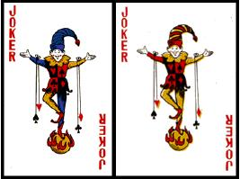

#11390 1 2006-09-23T23:50:35Z Shark POUR YOUR MAPS IN PLEASE!!
Ace: race
2: Puzzle
3:Action
4:Tilesets (looking for good-looking maps that have great gameplay)
5:Puzzle
6:Action
7:Survival
8: N art/Race/DDA [
3 remaining!]
9:Action
9:Tilesets (looking for good-looking maps that have great gameplay)
10:Action
J:Action
Q:Action
k:Puzzle
Joker: DDA
NEWS! Everyone gets 2 cards! Well, most of us. everyone gets two maps except Shark and maybe a few others.
The map you make does not have to be related to the card you pick.
I was in the bathroom and had this cool idea, so here I am typing this up....
This is a 54 map series with a variety of maps. At the end, we should have DDAs, Races, Action maps, Puzzles, Tilesets, and any others.
There are 14 distinct types of cards, (ie Ace, 2,3,4,5,6,7,8,9,10,J,Q,K,and Joker).
Any random 5 of those types, such as 3,7,J,Q,K,and 10, will be ACTION.
Any random 3 of those types, such as 3,2 and 10, will be PUZZLE.
Any random 2 of those types, such as 3 and 10, will be TILESETS.
Any random 1 of those types, such as 3 will be SURVIVAL.
the 8s will be N art.
Aces will be RACE.
Jokers will be DDA.
Step-by-Step Instructions:
1) pick two cards that haven't already been chosen.
2) Share with the rest of the world the card of your choice by posting it in this thread. for now, Dejablue4 and TheAdster have one of the races and Clifty and Sketch have taken the DDAs.
3)Me and a Helper (
Cowgomoo ) will PM you when it is your turn to make a map.(
mostly him, though.)
------
CARDS:
Spades
Ace [TheAdster]
2 [KIRBY]
3 [McP3000]
4 [Azmilion]
5 [Mr Mongoose]
6 [Obby]
7 [McP3000]
8 (off limits!)
9 [bigblargh]
10 [SHARK]
J [DAVE, BLUE_TETRIS, changes his name too often]
Q [BOREALIS]
K [KENDOGG102]
Hearts
Ace (off limits)

2 [KAMIKAZE3000]
3 [THEINVADER]
4 [a-caridi]
5 [maniac]
6 [kendogg102]
7 [Capt Weasle]
8 (off limits!)
[mc george, maybe?]
9 mcgeorge
10 [Mr Mongoose]
J [COWGOMOO]
Q [Zres]
K [DAVE, BLUE_TETRIS, changes his name too often]
Diamonds
Ace [DEJABLUE4]
DONE!
2 of Diamonds [Fifix]
DONE!
3 [Azmilion]
4 [Maniac]
5 [Solarion]
6 [LIMER]
7 [KinGAlex]
8 [THEINVADER]
9 [Rocket_Thumped]
10 of Diamonds [Jakel]
DONE!
J [Fifix]
Q [nevermore]
K [Elaxion]
Clubs
Ace [nevermore]
2 [adam77]
3 [Jakel]
4 [LittleViking001]
5
6 [LittleViking001]
7 [KINGALEX]
8 (off limits!)
9 [TheAdster]
10 [GamingWolf]
J [CHASETHEBASE]
Q [Chasethebase]
K [Krusch]
Jokers:
Color Joker [Clifty]
B/W Joker [Sketch]
Current Participants
Kirby,
McP3000,
Obby,
Shark,(gets one map)
Dave,
Borealis,
Kendogg102,
Kamikaze3000
Maniac
TheInvader
Capt Weasle,
Cowgomoo,
Zres,
Limer,
Chasethebase,
KinGAlex,
GamingWolf,
mc george,
elaxion,
Rocket_Thumped,
Tempus_Fugit,
a-caridi (
invalid card selection. Deuce of Hearts already taken.)
Twistkill, (
No selection)
Sketch, (gets one map)
Krusch,
Clifty [gets one map]
LittleViking001,
Solarion,
Azmilion,
Fifix,
Jakel.
Phew. Lots of people.

#233546 2 2006-09-26T01:47:09Z dejablue interesting idea... what do you have in your bathroom?

well i'll take an action... but i of course want an ace... i love making races

#233816 3 2006-09-26T15:58:47Z Cowgomoo good idea
can i have the jack of hearts?
#233822 4 2006-09-26T16:13:09Z Shark Dejablue4, I think you misunderstood. You pick a card, its part of the map challenge to make whatever type of map you get. But you get a Race.
Dejablue4: Ace of Diamonds
Cowgomoo: Jack of Hearts
OoOh..Psyphic powers:
McP3000: 3 & 7 of Spades.
KinGAlex: 7 of Clubs.
Kirby: 2 of Spades.
-=Guys=-
Don't pick Aces/DDAs if you know that I'll have to take them away from you..
#233828 5 2006-09-26T16:50:27Z Levinous Okay, if I understand correctly... I'll pick the 2 of spades.
#233831 6 2006-09-26T16:53:24Z KinGAleX Seven of Clubs, my good man.
#233832 7 2006-09-26T16:55:24Z McP3000 I'll do two of the action levels...uh 3 and 7 of spades...
(and if this isnt how it works could you pm me how it really does work because im confused.)
#233842 8 2006-09-26T17:17:04Z blue_tetris I'm in for this:
Can I pick two?
King of Hearts, Jack of Spades.
If I can only have one, I need to be the King of Hearts.
#233844 9 2006-09-26T17:26:06Z kendogg102 Ill take the King of Spades
#233846 10 2006-09-26T17:37:43Z theinvader Hurrah! I was honoured to get my invite, I'll take the 3 of hearts and make a tileset, since I do those best (there's no N Art section

)
#233850 11 2006-09-26T17:44:56Z Shark Hurrah! I was honoured to get my invite, I'll take the 3 of hearts and make a tileset, since I do those best (there's no N Art section :sad:)
Hmm, should we add an N art section?
meh, whatever.

7 of spades: K3000.
theinvader: 3 of spades, N art*
#233851 12 2006-09-26T17:46:37Z kamikaze3000 got my invite. 7 of spades please
EDIT: in an earlier post, it said that mcp had 7 spades. im not sure whether you were using that as an example or if he was having it. if he is, i'll have 2 of hearts.
#233852 13 2006-09-26T17:51:06Z theinvader Okydoky, I'll do an N Art. Does it have to be 3 of hearts related?
#233853 14 2006-09-26T17:53:30Z Shark No no no.
3 of hearts- your map.
8 of diamonds- your N art. We'll decide later what its going to be about.
edit: Sure, Limer...Jack-off Diamonds..
EDIT: Added all of you.
Ok. CGM is official PMer.
#233854 15 2006-09-26T18:00:31Z Limer nice. READ ME OTHER POST V
#233865 16 2006-09-26T19:05:02Z Borealis Queen of Spades, if you will.
#233868 17 2006-09-26T19:21:32Z Chase Me wants t3h Jack of Clubs!
#233873 18 2006-09-26T19:25:00Z Cowgomoo can i help you PM people for map making? (if its still open)
if i can can i still make my jack of hearts?
#233878 19 2006-09-26T19:32:28Z McP3000 Damn you, you gave my spots away... how about 3 and 7 of Clubs?
Edit: It's cool then, i get my 3 and 7 of spades
#233879 20 2006-09-26T19:32:42Z Limer can i change mine to the 6th of diamonds (its me lucky number) sorry to be annoying.
#233881 21 2006-09-26T19:34:59Z Shark Shit, shit. I messed up. McP, Keep your 3 and 7. Its my fault I didn't update quick enough.
ok Limer, you can be 6 of diamonds instead. Delete your other post. Its confusing. EDIT: Realized that you can't delete your posts.. heheh
CowGoMoo is my PM-ing Buddy.
Kamikaze3000, moved your card to 2 of Hearts.
#233884 22 2006-09-26T19:40:11Z GamingWolf Figures that you'd all head for the male face cards first. Whatever.
I choose the 10 of clubs.
#233965 23 2006-09-26T21:26:36Z Obby (guest) 6 of spades will bemy card.
#233972 24 2006-09-26T21:52:37Z Zres Queen o' hearts please!
#233974 25 2006-09-26T21:54:19Z Maniac Four of diamonds and five of clubs, in that order. If I can only do one card I pick four of diamonds.
#233985 26 2006-09-26T22:16:55Z capt_weasle Awww. I wanna do an 8 of Spades. But if I cannot....then...7 of Hearts.
#233997 27 2006-09-26T22:49:08Z Shark Capt Weasle: 7 of hearts
Maniac: 4 of Diamonds, 5 of Hearts
Zres: Queen of Hearts
Obby: 6 of Spades
done and done.
BTW, could I have this pinned?
Quote: mc george
If I've been invited to give this a go, I'll participate. I'll take 4 of Spades (I'll take that if I only do one) and 10 of Hearts. Just to let you know, the only two types of map I could possibly make are Action and Puzzle.
4 of spades & 10 o' hearts it is, after a little reviewing of your maps.
#234007 28 2006-09-26T22:58:38Z George If I've been invited to give this a go, I'll participate. I'll take 4 of Spades (I'll take that if I only do one) and 10 of Hearts. Just to let you know, the only two types of map I could possibly make are Action and Puzzle.
Edit: I'd prefer to do one, so just 4 of Spades. Hopefully I get action.
#234021 29 2006-09-26T23:13:42Z elaxion I don't know if this is the way you do it, but I'll take K of Diamonds...
#234046 30 2006-09-26T23:46:25Z rocket_thumped give me a card... as long as I dont have to make a DDA, race Im good.
#234056 31 2006-09-26T23:57:26Z Tempus_Fugit Sure, I'm in. Two of clubs, I suppose.
#234059 32 2006-09-27T00:00:23Z Zres Yeah. I can only make action maps. Don't put me in something bad.

#234066 33 2006-09-27T00:06:01Z a-caridi action maps only for me please!
#234068 34 2006-09-27T00:06:51Z blue_tetris If I've been invited to give this a go, I'll participate. I'll take 4 of Spades (I'll take that if I only do one) and 10 of Hearts. Just to let you know, the only two types of map I could possibly make are Action and Puzzle.
Survivals are a cinch; as are tilesets. The DDAs and races won't really be something you'll have to fool with, as of yet. I'm sure you could always decline if told to do one.
Also, if anyone asks me to do a DDA, I'll certainly decline. I don't do don't do anythings.
#234070 35 2006-09-27T00:08:02Z Twistkill I can also only make action maps, and I don't even feel like participating, because I can't be bothered to make maps right now, and some other personal problems...
#234076 36 2006-09-27T00:19:40Z Shark Tempus_Fugit: 2 of Clubs
Twistkill,
Zres, & a-caridi: There just might be a way for me to ensure you an action map..

Pick a Card! Any card!
Also,
Twistkill We will probably not make maps for another 3-4 days. his just got started. And, What are the odds that you'll be the first one to make a map? Don't worry, and there is
no fine print! satisfaction guaranteed!
Dave: Pin, please?
#234078 37 2006-09-27T00:26:39Z Zres Hey, can't you guarantee me an action map?

#234084 38 2006-09-27T00:35:44Z Sketch Hey, Thanks for inviting me. I really appreciate it.
Anyway would you mind giving me a joker, its my favorite card in the card deck + I would love to make a DDA, because i haven't made one in a long time. Trust me you wont regret it.
If i can't have the Joker (Which i really would love) Then i'll take the Jack of Hearts.
EDIT
If i do get the joker b/w please.
#234100 39 2006-09-27T00:52:17Z a-caridi could we get a sample puzzle so we know what this should lookie like?
#234104 40 2006-09-27T01:00:59Z Shark could we get a sample puzzle so we know what this should lookie like?
wha? Its just any old puzzle..you know what a puzzle is.. go to NUMA if you want.
Here is one of the finest Jumper Puzles
Here is one my puzzles..
Sketch, you got 1 of the Jokers..I hope Clifty takes the other.
Guys, Pick a Card!
a-caridi, Twistkill, Rocket_thumped, please pick a
Card #234107 41 2006-09-27T01:03:13Z rocket_thumped Give me a survival!
also thanks for the invite...
#234117 42 2006-09-27T01:20:00Z blue_tetris This thread is like Aju's sister, now...
#234142 43 2006-09-27T01:53:43Z dejablue #234154 44 2006-09-27T02:12:54Z krusch Joker. D:
#234159 45 2006-09-27T02:22:58Z KinGAleX Seven of Diamonds, please.
#234164 46 2006-09-27T02:29:34Z Clifty Sweet, of course i'll take it! I'll have the b/w one if I can, but if not, whatever.
Better get started...
#234165 47 2006-09-27T02:33:56Z rocket_thumped This thread is like Aju's sister, now...
A whore?
#234189 48 2006-09-27T03:40:34Z McP3000 A post whore...lol
too bad Aju hasnt seen this yet
*angrily give's Aju's sister her thirty bucks*
#234193 49 2006-09-27T03:42:47Z a-caridi i meant, sample map, lol i dont know why i said puzzle, do u want our map to look like the carD?
#234194 50 2006-09-27T03:43:01Z LittleViking Four and six of clubs, please.
#234195 51 2006-09-27T03:44:03Z a-caridi deuce of hearts for me, please
#234199 52 2006-09-27T04:24:49Z krusch Oh, I see Jokers are off-limits. Good.
King of clubs, then.
#234204 53 2006-09-27T04:28:58Z Solarion Five of diamonds, please.
#234228 54 2006-09-27T06:05:39Z Azmilion thanks for the invite,
I'll take a 3 of diamonds.
I have to warn you though,i can't make Race/Puzzle maps for crap.
only Action/DDA/Survivals.
#234274 55 2006-09-27T11:37:46Z Fifix I'll grab the Jack of diamonds
 EDIT:If i can take another, then two of diamonds it is
EDIT:If i can take another, then two of diamonds it is#234288 56 2006-09-27T12:28:43Z Shark Wow.
Lots of new people. Anyway, I got Krusch's, KiNGAlex's second one, Clifty's, Both of LV's, Solarion's, Azmilion's, and finally Fifix's.
BTW: Krusch and Fifix, please pick another map to go with your current one.
If my estimates are correct, only 5 other current participants will get to make 2 maps.
Quote
Hey, aren't you supposed to get a random category?
I thought that was the point... To pick a card and you get a category that you have to do. But you're choosing your genre... blink.gif
SHHH! thats part of my plot to get these people who seem to think that they can
only action maps! Let them try to make puzles and survivals, it won't help.
we won't laugh at them, will we?
#234291 57 2006-09-27T12:31:38Z Levinous When do we get to know what genre we have to do?
#234400 58 2006-09-27T17:15:55Z Ad Seeing as Krusch stole the King of Clubs
Can I get the 2 of clubs?
No, that's taken too? DAMN YOU ALLES!
The 9 then?
Just a thought about the Jokers... but aren't there normally two of each variety? Or do I have weird decks of cards?
#234405 59 2006-09-27T17:23:46Z blue_tetris You may want to allow people to take thirds and more seconds. Even if everyone had two, you'd need about twenty different authors.
#234430 60 2006-09-27T18:36:10Z Shark You may want to allow people to take thirds and more seconds. Even if everyone had two, you'd need about twenty different authors.
done, done, and done.
#234433 61 2006-09-27T18:42:03Z Chase Queen of Clubs too then!
#234451 62 2006-09-27T19:53:01Z Navick Can I join? I know I turned this down earlier, but I'm interested now. I don't care about what card I am.
EDIT: Yes I do. Can I be a 3 of clubs and 10 of diamonds?
#234460 63 2006-09-27T20:25:46Z Ad Right, so already said 9 of Clubs, any other random one'll do.
*Prays for an ace*
♠♣♦♥♠♣♦♥♠♣♦♥♠♣♦♥♠♣♦♥♠♣♦♥♠♣♦♥♠♣♦♥♠♣♦♥♠♣♦♥♠♣♦♥♠♣♦♥♠♣♦♥♠♣♦♥♠♣♦♥♠♣♦♥♠♣♦♥ Wheee!
#234461 64 2006-09-27T20:25:48Z Fifix Ok... if you don't read edited posts
")
then I repeat: I'll also take two of diamonds, ok ?
#234485 65 2006-09-27T21:11:55Z LittleViking Just a thought about the Jokers... but aren't there normally two of each variety? Or do I have weird decks of cards?
A standard deck has two jokers. (Or no jokers. But when there are jokers, there are usually two in a deck.)
#234490 66 2006-09-27T21:21:15Z Mr_Mongoose Ten of hearts, five of Spades.
#234491 67 2006-09-27T21:21:30Z Red Reamer I think he was commenting on the fact that the jokers are often different.

The difference is often more pronounced, too.
#234504 68 2006-09-27T21:36:18Z Shark Just a thought about the Jokers... but aren't there normally two of each variety? Or do I have weird decks of cards?
A standard deck has two jokers. (Or no jokers. But when there are jokers, there are usually two in a deck.)
Quote: red-reamer
I think he was commenting on the fact that the jokers are often different.
user posted image
The difference is often more pronounced, too.
Yes, Usually there is one black and white joker and a color joker.
Yeah, same here.
#234580 69 2006-09-28T00:17:17Z Bigblargh I've been invited. Pick cards for me; I don't believe in gambling.
Sinning bastards.
#234592 70 2006-09-28T00:48:00Z nevermore Queen of Diamonds for me, Sire.
#234663 71 2006-09-28T02:56:05Z a-caridi four of for me please
#234665 72 2006-09-28T03:38:14Z Adam77 4 of hearts or the 2 of clubs please
#234704 73 2006-09-28T08:08:43Z Azmilion I'll also take the four of spades then.
#234708 74 2006-09-28T08:52:27Z George If I've been invited to give this a go, I'll participate. I'll take 4 of Spades (I'll take that if I only do one) and 10 of Hearts. Just to let you know, the only two types of map I could possibly make are Action and Puzzle.
Survivals are a cinch; as are tilesets. The DDAs and races won't really be something you'll have to fool with, as of yet. I'm sure you could always decline if told to do one.
Also, if anyone asks me to do a DDA, I'll certainly decline. I don't do don't do anythings.
Survivals and tilesets may be a cinch, but I've never tried making them. And I doubt my first survival would be a good one. I just hope I'm lucky enough to get action, or puzzle if need be. *Fingers crossed*
#234725 75 2006-09-28T12:28:46Z Levinous When do we get to know what genre we have to do?
Um, I'm not sure if you saw my post there...
I'll take the 9 of Hearts too.
#234726 76 2006-09-28T12:37:42Z Shark done.
Nevermore, I've put you down for a race as well. PM me or post here if you want to forfeit your position.
Kirby: sorry for ignoring your post. Didn't see it. Well, we have like 4 cards left, so maybe by tonight? *in approximately 12 hours?*
Just make a new post next time. This thread grows fast.
#234783 77 2006-09-28T17:05:37Z Cowgomoo can you PM me with exactly what i need to do? its something to do with PMing people in the contest when its their turn to make a map, but im not whether theres a order to it or anything
W00t, 100th post
#234821 78 2006-09-28T19:24:25Z Evil Bob 5 of clubs..
#235135 79 2006-09-29T14:42:38Z kendogg102 If we all get two cards you can just assing a random one to me. Thanx!
#235140 80 2006-09-29T15:09:41Z Ad ...just assing a random one...
Best Typo EVAR!
When should we start?
#235174 81 2006-09-29T16:07:41Z Shark We are starting now. Please read the following post carefully. post here/ PM me if you have any questions.
This will also be in the first post.
The way it works is that 2 people will make maps at the same time. They will make a draft of the level and then post it here. the other person who is making a map will post his draft as well. They will revise each other's maps and when both people are happy with the maps, they will be submitted to NUMA.
Once the maps are submitted to NUMA, the two mapmakers will choose two other mapmakers. The process will be edited/revised if need be.
please do not just submit your map to NUMA. You might and probably will be asked to do it over. It is very important to be organized.
Any volunteers to go first?

Kendogg102, I'll get you another card.
#235183 82 2006-09-29T16:31:51Z Cowgomoo so what do i do now?
#235236 83 2006-09-29T20:45:57Z LittleViking A few questions:
1. What's with the black eights being off limits?
2. Is the point to make a map shaped like the face of the card? Like, for a three of hearts, do we shape the tileset like a column of three hearts?
3. Are we going to be assigned certain map types? You seemed to have a very specific ratio of action to puzzle to survival, etc. in the beginning post.
#235238 84 2006-09-29T20:49:59Z kamikaze3000 A few questions:
1. What's with the black eights being off limits?
2. Is the point to make a map shaped like the face of the card? Like, for a three of hearts, do we shape the tileset like a column of three hearts?
3. Are we going to be assigned certain map types? You seemed to have a very specific ratio of action to puzzle to survival, etc. in the beginning post.
i know im not running it, but i think i know the answers.
1. this is for race/dda (maybe)
2. it says in the first post that it doesnt need to be.
3. i think cards are randomly drawn by shark and assigned to a map type.
#235309 85 2006-09-29T23:54:53Z Shark A few questions:
1. What's with the black eights being off limits?
2. Is the point to make a map shaped like the face of the card? Like, for a three of hearts, do we shape the tileset like a column of three hearts?
3. Are we going to be assigned certain map types? You seemed to have a very specific ratio of action to puzzle to survival, etc. in the beginning post.
i know im not running it, but i think i know the answers.
1. this is for race/dda (maybe)
2. it says in the first post that it doesnt need to be.
3. i think cards are randomly drawn by shark and assigned to a map type.
ahaHAHA!
We have two volunteers!
And yes, K3000, you are correct.
1.)8's are for N art/ DDA/ Race. Please have one.
2.)Our map does NOT have to be in the shape of the card.
3.)I have randomly chosen, yes. (look further down my post)
Ace: race
2: Puzzle
3:Action
4:Tilesets (looking for good-looking maps that have great gameplay)
5:Puzzle
6:Action
7:Survival
8: N art/Race/DDA [
3 remaining!]
9:Action
9:Tilesets (looking for good-looking maps that have great gameplay)
10:Action
J:Action
Q:Action
k:Puzzle
Joker: DDA
#235313 86 2006-09-30T00:08:05Z dejablue ok wow... this series has evolved pretty far... i already submitted my race to numa like a week ago... i didnt know we were supposed to
#235418 87 2006-09-30T06:53:04Z Solarion I somehow knew I would get puzzle, the type I most suck at making...
Well, too late now.
#235419 88 2006-09-30T07:05:17Z Ad Woo!
A Race & A Tileset!
Go Me!
But i thought 8's had to be N Art... oh well more DDAs has to be (hopefully) good!
#235449 89 2006-09-30T11:19:01Z George Quote: mc george
If I've been invited to give this a go, I'll participate. I'll take 4 of Spades (I'll take that if I only do one) and 10 of Hearts. Just to let you know, the only two types of map I could possibly make are Action and Puzzle.
4 of spades & 10 o' hearts it is, after a little reviewing of your maps.
Both of these spots have been taken by other people. If you still want me to participate, I'll switch my choice to 9 of Hearts.
#235453 90 2006-09-30T11:35:17Z Levinous I'll take the 9 of Hearts too.
*cough*
@Shark: You have two 9s. One says Tilesets, and one says Action.
#235719 91 2006-10-01T00:46:12Z George I'll take the 9 of Hearts too.
*cough*
@Shark: You have two 9s. One says Tilesets, and one says Action.
Sorry kirby, didn't see that. Looks like someone's disorganized.
#235791 92 2006-10-01T04:53:13Z rocket_thumped You gave me one.... I thought each got two?
Or was I mistaken?
#236268 93 2006-10-02T06:40:34Z Ad You gave me one.... I thought each got two?
Or was I mistaken?
Why don't you sign yourself up for that final race? You're always making them.
#236465 94 2006-10-02T23:15:49Z dejablue am i still doing a race? because the one i had meant to do for this series i already submitted to numa... i guess i can make another one
#236469 95 2006-10-02T23:24:43Z Homestar Runner I was invited awhile ago but I don't know if I should join. The only kind of map I can make is N Art. Just look at my maps.
#237832 96 2006-10-06T15:15:09Z Ad Any updates on the 1st two maps?
#237834 97 2006-10-06T15:17:02Z kamikaze3000 sorry. had lots of work in the last week. will get done now
#238377 98 2006-10-08T11:29:31Z Ad Waht Aboot Lil'Vike's?
#238475 99 2006-10-08T16:44:02Z rocket_thumped If there are any races left I think Ill take one.
#239587 100 2006-10-11T12:44:31Z Shark Rocket Thumped, would you like the ace of hearts? post here if you want a different face card.
sorry for all that frickin confusion mcgeorge, you can have the 9 of hearts of you wish. will you be interested in making a race? Or would you prefer the 5 of clubs?
Dejablue4, you probably will have to make another race, for the sake of this series. please?
Kamikaze3000 and LittleViking001 will be PM'ed now to make their maps. just make sure its a nice map and submit it to NUMA.
#239590 101 2006-10-11T13:01:04Z George Rocket Thumped, would you like the ace of hearts? post here if you want a different face card.
sorry for all that frickin confusion mcgeorge, you can have the 9 of hearts of you wish. will you be interested in making a race? Or would you prefer the 5 of clubs?
Dejablue4, you probably will have to make another race, for the sake of this series. please?
Kamikaze3000 and LittleViking001 will be PM'ed now to make their maps. just make sure its a nice map and submit it to NUMA.
I've never tried making a race, so I'd prefer to take 5 of clubs. Unless you really want me to make a race, which I'd probably give a go.
#239591 102 2006-10-11T13:17:46Z dejablue Rocket Thumped, would you like the ace of hearts? post here if you want a different face card.
sorry for all that frickin confusion mcgeorge, you can have the 9 of hearts of you wish. will you be interested in making a race? Or would you prefer the 5 of clubs?
Dejablue4, you probably will have to make another race, for the sake of this series. please?
Kamikaze3000 and LittleViking001 will be PM'ed now to make their maps. just make sure its a nice map and submit it to NUMA.
I've never tried making a race, so I'd prefer to take 5 of clubs. Unless you really want me to make a race, which I'd probably give a go.
you should give it a go mc_george... you never know, might turn out for the better
I enjoy making races.
And sure shark, i'll make another race... this series gives me an excuse to have to make a race
when does it have be done by?
#239593 103 2006-10-11T13:20:55Z Shark you should give it a go mc_george... you never know, might turn out for the better I enjoy making races.
And sure shark, i'll make another race... this series gives me an excuse to have to make a race when does it have be done by?
Dejablue4, you only start making your maps for this series when you are picked by someone who just finished their map.
mc george, its up to you.
#239598 104 2006-10-11T13:32:55Z dejablue #239611 105 2006-10-11T14:48:27Z kamikaze3000 kamikaze acknowledges PM and will have map completed soon
#239725 106 2006-10-11T20:50:38Z LittleViking #239999 107 2006-10-12T12:16:49Z George Well, I'll give it a try then. No promises it will be as good as a deja or r_t race.
#240023 108 2006-10-12T15:00:59Z rocket_thumped yes the ace of hearts then...
#240029 109 2006-10-12T15:18:19Z Shark Fine, R_T and mc_g get the last races.
Oh! and LV, please call upon someone to go next.
#240032 110 2006-10-12T15:22:20Z dejablue am i still signed up for a race? gah, im so confused
When am i supposed to make it? whos supposed to make their map now... i have many questions...
#240035 111 2006-10-12T15:24:35Z Shark *DOUBLESIGH*
1) yes, you are still signed up for a race.
2) you will make your race once you are picked by someone who just finished theirs.
3) Whoever LV picks is going to make a map now.
4) what are the rest of your questions?
#240162 112 2006-10-12T20:39:53Z LittleViking mc_george sounds ready to go. I pick him.
#241372 113 2006-10-15T08:08:41Z George mc_george sounds ready to go. I pick him.
Cool. So how long do I have to make it?
#241440 114 2006-10-15T11:59:30Z Shark Lets say a week from today. your first race.

#241507 115 2006-10-15T13:50:00Z Cowgomoo Im sorry, im going away 18th octo to about 30th, i dont think i can be pmer any more. i can still do card, but its almost a 2 week gap. really sorry about that, when i signed up i didnt know i was going away.
#241611 116 2006-10-15T17:26:51Z Azmilion If the person who chooses me to do one can just PM me to ge tmyself going i'll be fine.
#242851 117 2006-10-18T15:00:32Z kamikaze3000 eek! school is getting too much right now. please remove me from this and give my slot to someone else. i cant cope with everything thats going on
#242879 118 2006-10-18T18:07:38Z Chase I'll take kami's last spot, if you cannot fill it, and if that is allowed!
#242983 119 2006-10-18T22:16:19Z Shark go ahead, its yours, CTB. I like your sig BTW.
I made us a sig tag.
#243444 120 2006-10-19T22:54:53Z Chase Right, So I have to make what map? Puzzle? OK then, on it!
Done even...
Mined the walls!
ohhhhh....what an awful joke there!
I pick....nevermore for the next challenge!
#245544 121 2006-10-24T22:42:28Z LittleViking Why are we supposed to only have one or two people mapping at a time again? I'd say screw that. Get your maps in, people.
#245549 122 2006-10-24T22:49:04Z Shark ...I'd say scrap this as well. I'm kinda jumping from idea to idea, but I agree. We're moving too slowly.
#246389 123 2006-10-27T12:46:39Z George No, it's sort of my fault for the delay. I didn't get a chance to fine tune my map during the week.
Here, my first race:
http://numa.notdot.net/map/65314
Edit: Fixed the link.
#246776 124 2006-10-28T08:11:30Z Clifty Quote
The map you attempted to access does not exist.
 http://numa.notdot.net/map/65314
http://numa.notdot.net/map/65314#247915 125 2006-10-30T18:55:20Z a-caridi so are we just giving in our maps?
i cant access numa, ill put it on a txt file on here.
#247981 126 2006-10-30T21:08:49Z Ad This's been collecting dust in My N Levels for a month now...
A♠ - The Only Card I need Is...#247994 127 2006-10-30T21:25:30Z George So what now with the series? Do we pour our maps in?
#248828 128 2006-11-01T23:23:04Z Winjet i don't get it. you have all that stuff, but it never says you edited the post. huh? weird
#248829 129 2006-11-01T23:25:49Z Shark So what now with the series? Do we pour our maps in?
please pour your maps in. put some links in here, of course.
#250258 130 2006-11-05T05:48:17Z a-caridi I can't get onto Numa So heres a Txt file. 4 of hearts!
#251636 131 2006-11-08T12:16:19Z Chase My maps will be done ASAP, another thing would be to PM all who have not been notified.
#253741 132 2006-11-12T23:32:35Z Tempus_Fugit Have I been booted from this thing? Adam seems to have my position.
#253751 133 2006-11-12T23:51:42Z dejablue Ace of Diamonds: no jump race...
http://numa.notdot.net/map/67581#254751 134 2006-11-15T00:02:23Z Navick #256472 135 2006-11-18T13:55:14Z Fifix Here's my
Two of diamonds
Working on the Jack of Diamonds.
IS THIS STILL ALIVE ?
#261547 136 2006-11-29T14:37:18Z Shark Hem. Sorry people, I totally forgot about this.
*Starts to PM people*
#261772 137 2006-11-29T23:15:39Z Obby (guest) #262978 138 2006-12-02T03:25:58Z a-caridi #263239 139 2006-12-02T14:43:35Z Navick #264980 140 2006-12-05T20:11:52Z Ad #265053 141 2006-12-05T21:36:36Z a-caridi 4 of Hearts on NUMA
(deleted it last time by accident)
http://numa.notdot.net/map/70750#266853 142 2006-12-09T04:07:21Z geti im in, would like a race or action card please..
#267086 143 2006-12-09T16:36:21Z Chase ^All the cards have been taken, you should read the whole topic before posting!
My maps should be in tomorrow hopefully...
#267615 144 2006-12-10T14:27:27Z Navick #267621 145 2006-12-10T14:34:01Z Shark We've got 6 more maps in! I'll add them all to the first post as soon as I finish up some yardwork. PM the next batch of people, too.
Get your maps in, guys.
#268047 146 2006-12-11T06:05:02Z geti damit i checked, it said there were free ones! meh
#276129 147 2006-12-23T22:39:00Z Clifty OK, I'm adding in mine! I wasn't going to do this one, but it got awesome ratings, so... yeah.
Colour Joker#278245 148 2006-12-29T04:12:25Z Bigblargh I was reading the thread, and I was like, "I wish I signed up for that when I had the chance!" But then I read my name in the participant list and I was like "uh oh."
So, here's an action map, as promised:
http://numa.notdot.net/map/73786
Nine 'o spades.
EDIT:
Wait, I'm confused. I get to pick between these two, right? You wrote 9 twice.
Quote: Shark
9:Action
9:Tilesets (looking for good-looking maps that have great gameplay)
#290038 149 2007-01-26T00:00:43Z Clifty *bump*
Has this been abandoned or something? Seemed like a pretty good idea.